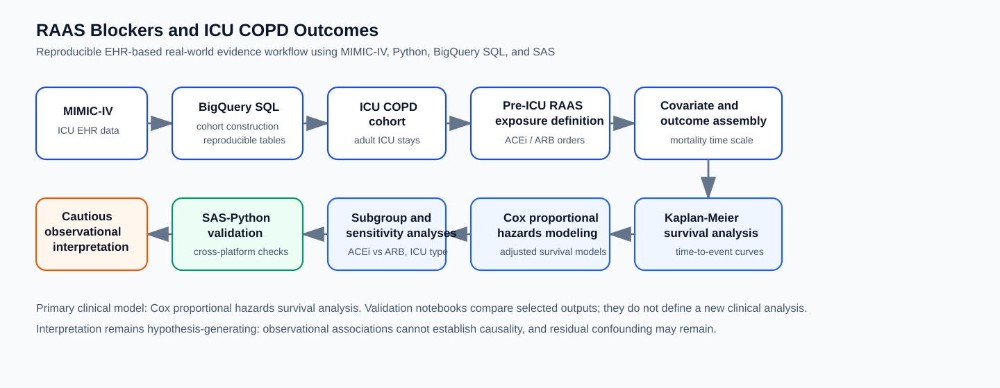
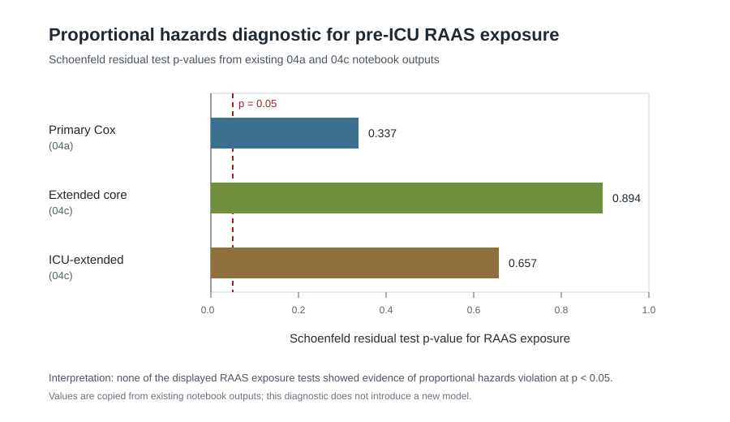
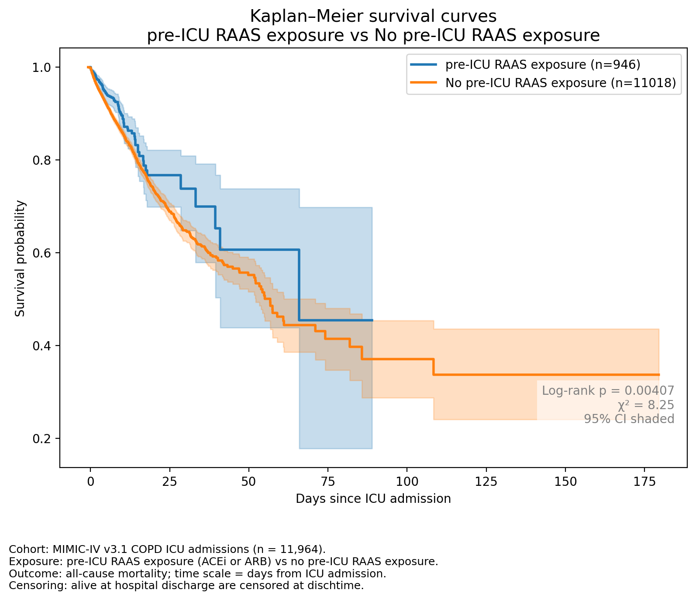
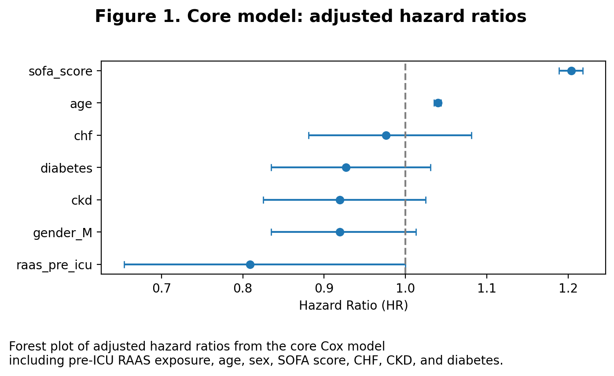
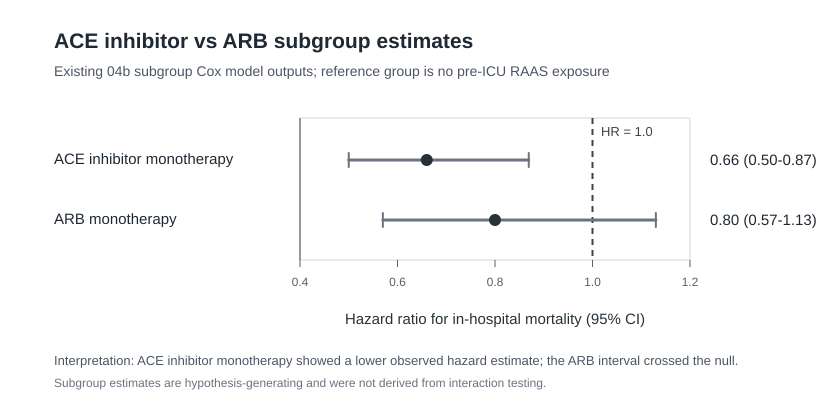
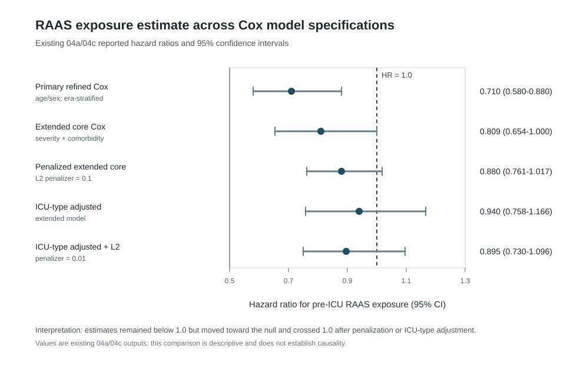

RAAS Blockers and In-Hospital Mortality in ICU Admissions With COPD
1 Executive summary
This report presents a polished narrative version of a reproducible MIMIC-IV portfolio analysis evaluating whether pre-ICU renin-angiotensin-aldosterone system (RAAS) inhibitor exposure was associated with time-to-in-hospital mortality among ICU patients with chronic obstructive pulmonary disease (COPD).
The primary analysis used Kaplan-Meier survival curves and Cox proportional hazards models. Pre-ICU RAAS inhibitor exposure was associated with lower observed in-hospital mortality in the Kaplan-Meier and Cox survival analyses. In the refined proportional hazards-compliant Cox model, combined pre-ICU RAAS exposure had an estimated hazard ratio (HR) of 0.71 (95% CI 0.58-0.88).
Subclass analyses suggested that ACE inhibitor monotherapy had a stronger observed association than ARB monotherapy. ARB monotherapy was directionally associated with lower hazard but was not statistically significant. Extended covariate and sensitivity models attenuated the RAAS association after additional adjustment, including ICU type and acute severity/case-mix variables.
Overall, the findings should be read as observational associations. Residual confounding, confounding by indication, exposure misclassification, and single-center ICU case mix remain important considerations.
2 Study question
The study question was whether pre-ICU inpatient RAAS inhibitor exposure was associated with time-to-in-hospital mortality among ICU-admitted adults with COPD in MIMIC-IV.
The analysis was designed as a reproducible clinical analytics workflow, not as a causal treatment-effect study. The repository-level study background is available in Study background, and the detailed methods outline is available in Methods overview.
3 Data source and cohort
The analysis used MIMIC-IV v3.1, a de-identified ICU electronic health record database maintained by the MIT Laboratory for Computational Physiology and distributed through PhysioNet.
Adult ICU patients with COPD were identified using ICD-9 and ICD-10 diagnosis codes recorded during hospitalization. Cohort construction was performed at the ICU-stay/admission level using version-controlled BigQuery SQL and notebook-based checks.
The cohort workflow is documented across the executable notebooks:
- 01 ICU cohort extraction
- 02 COPD cohort and RAAS exposure construction
- 03a baseline covariates
- 03b exposure merge

4 Exposure, outcome, and covariates
The primary exposure was pre-ICU RAAS inhibitor use, defined from inpatient prescription orders for ACE inhibitors or ARBs before or at ICU admission. This exposure definition supports reproducible EHR-based construction, but it does not directly measure outpatient chronic use, adherence, dose, duration, indication, or medication discontinuation before hospitalization.
Detailed exposure indicators included ACE inhibitor exposure, ARB exposure, dual ACE inhibitor plus ARB exposure, and mutually exclusive ACE inhibitor or ARB monotherapy indicators for subgroup analysis.
The primary outcome was time-to-in-hospital mortality, measured from ICU admission to in-hospital death or hospital discharge. Patients discharged alive were censored at discharge.
Core covariates were selected using a clinical framework and included demographics, cardiovascular comorbidities, chronic kidney disease, diabetes, and SOFA score. Extended sensitivity models added ICU type and additional severity or case-mix variables. The detailed definitions are summarized in Methods overview and the short notebook notes under docs/.
5 Statistical methods
The primary clinical analysis used Kaplan-Meier survival curves and Cox proportional hazards regression. Proportional hazards assumptions were assessed using Schoenfeld residual-based diagnostics. A refined Cox model stratified by calendar-era grouping was used to address proportional hazards concerns while preserving the survival-modeling focus.
Sensitivity analyses evaluated extended covariate adjustment, ICU type, and penalized Cox specifications. A secondary logistic model was fit only for SAS-Python reproducibility comparison; it was not used as the primary clinical analysis.

The Schoenfeld residual diagnostic summaries did not indicate evidence of proportional hazards violation for the primary RAAS exposure term in the primary, extended core, or ICU-extended Cox specifications. Calendar-era non-proportionality identified in the primary modeling workflow was addressed by stratifying baseline hazards by anchor_year_group.
The primary survival notebook is 04a outcomes and modeling, with a concise methods/results note in 04a short documentation.
6 Kaplan-Meier survival results
Kaplan-Meier curves showed lower observed in-hospital mortality among patients with pre-ICU RAAS inhibitor exposure compared with those without RAAS exposure. The visual separation supported further Cox proportional hazards modeling, while remaining descriptive and observational.

The Kaplan-Meier curves are best viewed as unadjusted survival patterns. They do not account for all differences in comorbidities, acute illness severity, ICU case mix, or medication-prescribing context.
7 Cox proportional hazards results
The refined proportional hazards-compliant Cox model estimated HR 0.71 (95% CI 0.58-0.88) for combined pre-ICU RAAS exposure. This indicates that RAAS exposure was associated with lower observed in-hospital mortality hazard after adjustment within the modeled framework.

This estimate is not evidence that RAAS inhibitors caused lower mortality. RAAS exposure may also identify patients with different cardiovascular histories, baseline risk profiles, clinical management patterns, or medication-continuation decisions.
Because the refined primary model was followed by extended covariate and ICU-type sensitivity models, the primary HR should be read alongside the attenuation pattern shown in the sensitivity comparison below rather than as an isolated estimate.
The concise project-level result summary is available in Results summary.
8 ACE inhibitor vs ARB subgroup analysis
The subclass analysis evaluated whether the observed association for combined RAAS exposure appeared similar for ACE inhibitors and ARBs.
ACE inhibitor monotherapy was associated with lower observed in-hospital mortality in the subclass Cox model. ARB monotherapy had a directionally lower-hazard but statistically non-significant estimate. Dual ACE inhibitor plus ARB therapy was rare and excluded from monotherapy Cox modeling.

These subclass comparisons are descriptive and hypothesis-generating. They do not represent a formal interaction test, and they should not be read as evidence that ACE inhibitors are clinically superior to ARBs in ICU-admitted COPD patients. Confounding by indication, medication-selection bias, tolerance or contraindications, prescribing history, cardiovascular comorbidity, and differences in patient severity may all contribute to the observed subclass pattern.
The executable subgroup workflow is available in 04b RAAS subgroup modeling, with a concise note in 04b short documentation.
9 Extended covariate/sensitivity model interpretation
Extended covariate models evaluated whether the observed RAAS association persisted after adding additional severity, comorbidity, and ICU care-setting variables.
In the unpenalized core Cox model with extended covariates, pre-ICU RAAS exposure had HR 0.809 (95% CI 0.654-1.000, p = 0.050). In the penalized core model, the point estimate remained below 1 but was not statistically significant. After adding ICU type, the RAAS estimate was attenuated and was not statistically significant.

This attenuation suggests that ICU-level case mix, organ dysfunction, and acute clinical severity may contribute to the observed association. In practical terms, pre-ICU RAAS exposure was associated with lower observed mortality in the primary model, but the estimate was sensitive to additional adjustment.
The extended covariate workflow is available in 04c extended covariate Cox model, with a concise note in 04c short documentation.
10 SAS-Python reproducibility validation note
The repository includes SAS-Python reproducibility validation for selected secondary model outputs. This step checks cross-platform agreement for exported parameter results and does not introduce a new clinical analysis.
The secondary Python logistic model in 04d Python logistic validation model generated parameters for comparison with SAS outputs. The 05 SAS-Python validation notebook compared precomputed SAS and Python secondary logistic validation outputs. Cox proportional hazards survival modeling remained the primary clinical analysis.
Additional details are available in Validation notes and SAS workflow notes.
11 Limitations
The observational design limits causal interpretation. The observed association may reflect residual confounding, confounding by indication, differences in medication continuation or withholding, and unmeasured outpatient care patterns.
The RAAS exposure definition used inpatient prescription orders before or at ICU admission. It does not directly capture outpatient chronic exposure, adherence, dose, duration, patient-level indication, or medication discontinuation before hospitalization.
COPD status was identified using diagnosis codes recorded during hospitalization. This supports reproducible EHR cohort construction but may introduce misclassification relative to spirometry-confirmed COPD.
MIMIC-IV reflects ICU admissions from a specific health system. Results may not generalize to other hospitals, non-ICU COPD populations, outpatient cohorts, or current prescribing contexts.
The ACE inhibitor versus ARB comparison is particularly exploratory because medication subclasses may reflect different indications, contraindications, tolerability, and comorbidity profiles.
For the full interpretation and limitation discussion, see Discussion and limitations.
12 Portfolio/reproducibility note
This Quarto report is the single polished narrative version of the portfolio analysis. It is intentionally distinct from the repository README, which provides a portfolio overview and navigation, and from docs/, which provides modular reference documentation. The notebooks/ directory contains the executable analysis workflow.
No patient-level data, credentials, local paths, or large generated intermediate files are included in this repository. Reproduction requires appropriate MIMIC-IV/PhysioNet access, Google Cloud authentication, BigQuery access, and local environment configuration.